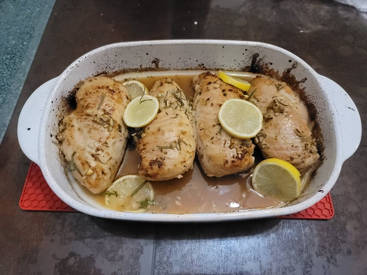

Baked Lemon Chicken

Ingredients:
- 4 Chicken breasts
- 3 tbsp Butter
- 1/3 cup Chicken broth
- 4 tbsp Lemon juice
- 1 tbsp Honey
- 2 tsp Garlic, minced
- 1 tsp Italian seasoning
- 1 tsp Salt, or to taste
- 1/4 tsp Black pepper, or to taste
- Optional: Fresh rosemary
- Optional: Lemon, sliced
Instructions:
- Preheat an oven to 400 degrees Fahrenheit.
- Heat the butter in a large pan over medium-high. Brown the chicken breasts for about 2-3 minutes per side. Then remove from the pan and place into a baking dish.
- In a separate bowl whisk together the chicken broth, lemon juice, honey, garlic, Italian seasoning, salt, and pepper.
- Pour the sauce over the chicken in the baking dish. Bake for 20-30 minutes or until the internal temperature of the chicken reads 165 degrees Fahrenheit, making sure to baste the chicken every 5-6 minutes.
- Garnish with lemon and rosemary if desired and serve.